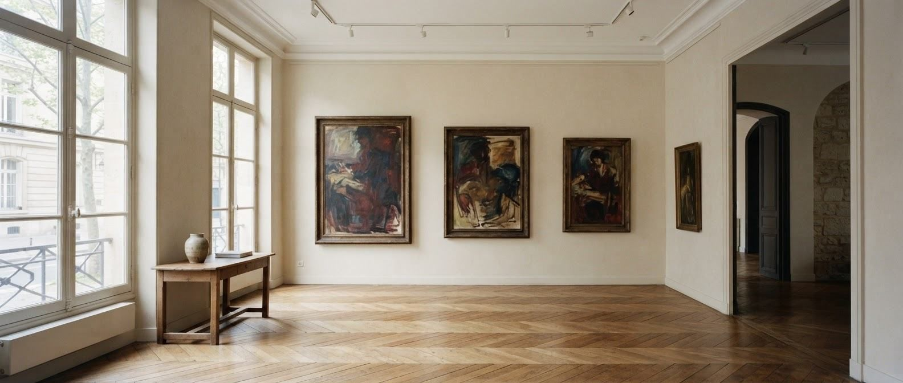
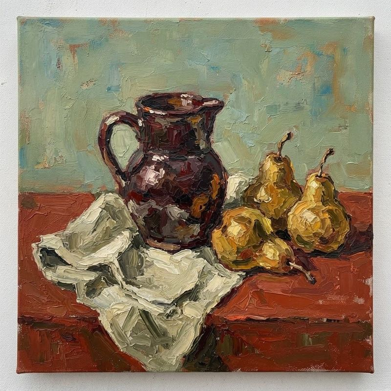
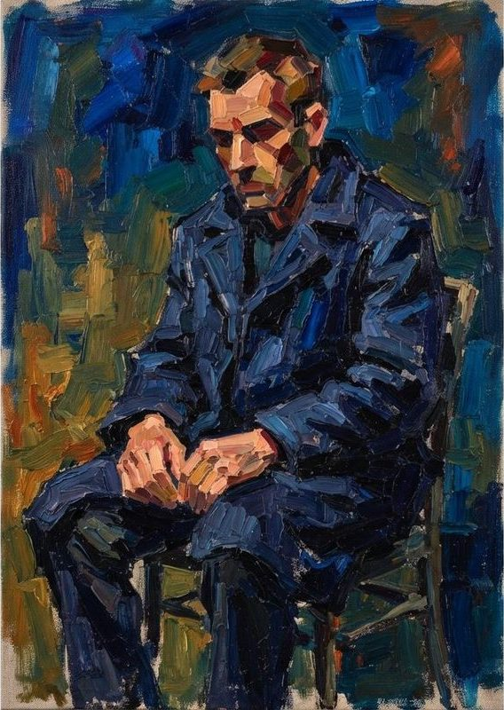
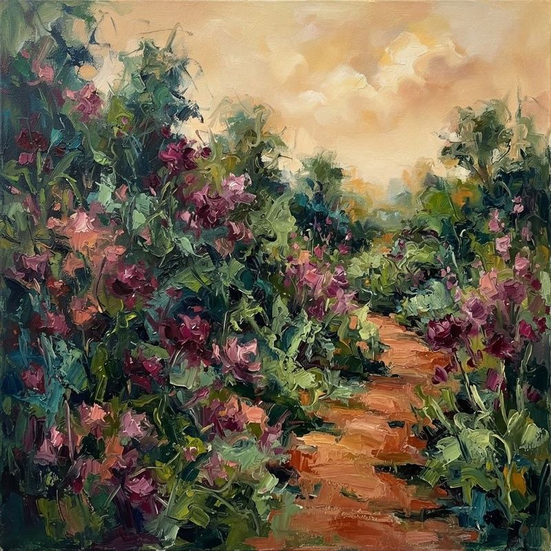
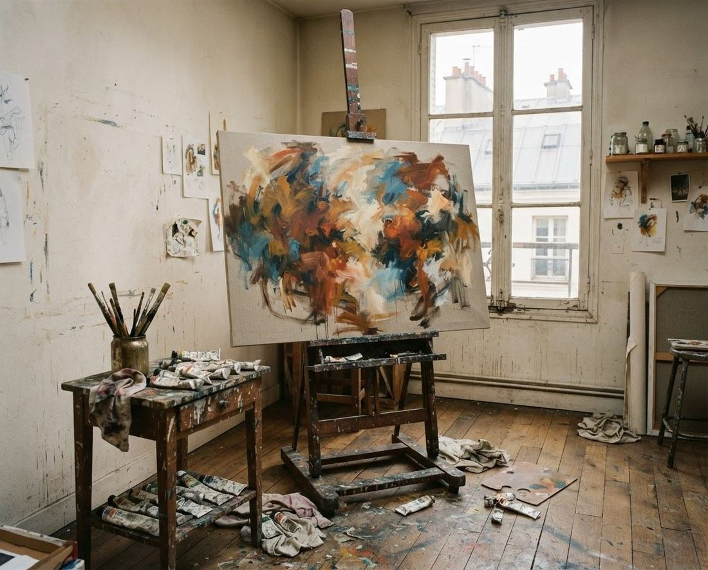

Galerie d’art · Paris
La couleur,
l’émotion vivante.
Explorer les œuvres
De Paul DECHEWSKY.

Un lieu pour regarder autrement · photographie d’illustrationParis, France
Regard sur la galerie
Des œuvres qui vous parlent.
Sélection visuelle de maquette : compositions illustratives non attribuées, sans disponibilité commerciale annoncée.
-

Étude en carmin
Découvrir les œuvres : Étude en carmin -

Silhouette au bleu
Découvrir les œuvres : Silhouette au bleu -

Jardin intérieur
Découvrir les œuvres : Jardin intérieur

Paul DECHEWSKY · Propriétaire & peintre
Une vie de peinture.
Depuis plus de 30 ans, Paul DECHEWSKY évolue dans le milieu artistique. Peintre et passionné, il expose et vend ses propres œuvres et celles de la mouvance expressionniste.
30+ans de rencontres
et de passion artistique
Des œuvres de grands artistes à retrouver
Des artistes comme DECHEWSKY qui font vivre l’art expressionniste.
- Soutine · Modigliani
- Kikoine · Pascin
- Chagall · Picasso
Artistes cités dans l’univers de la galerie. Les illustrations de cette maquette ne reproduisent pas leurs œuvres.